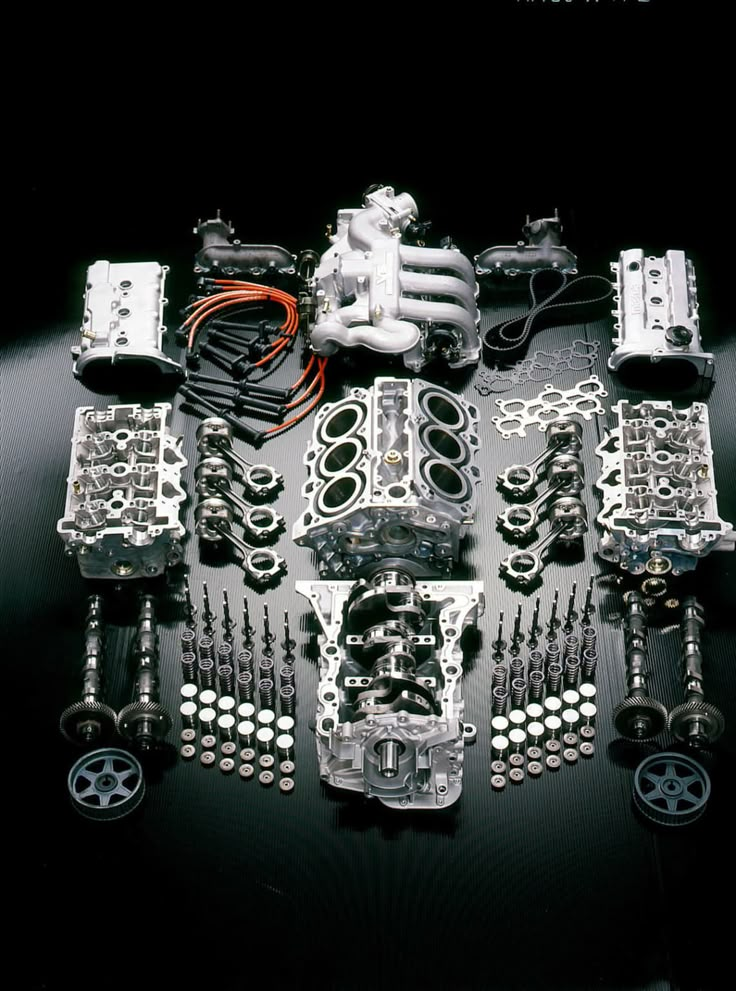

BETTER PERFORMANCE
At AutoCraft, we believe that the quality of the parts used in a vehicle directly affects its safety, performance, and reliability. That is why we use dependable, well-tested parts that meet high standards for durability and efficiency. Whether your vehicle needs a small replacement or a major component, we focus on quality and long-term value rather than quick shortcuts. Using the right parts helps your car run smoothly, reduces the risk of recurring problems, and keeps it reliable for everyday driving.
RELIABLE SOLUTIONS
Quality parts are essential to keeping a vehicle in good condition. A reliable part helps maintain engine performance, improve fuel efficiency, and support the overall safety of the vehicle. We choose parts that are suitable for the make and model of your car and that offer dependable service over time. This attention to detail helps prevent unnecessary failures and ensures your vehicle continues to perform at its best.
TRUSTED SERVICE
Our focus on quality extends beyond the repair itself. We want customers to feel confident that their vehicle is receiving the right components and proper installation. By combining trusted parts with skilled workmanship, AutoCraft provides service that supports reliability, efficiency, and peace of mind for every driver.